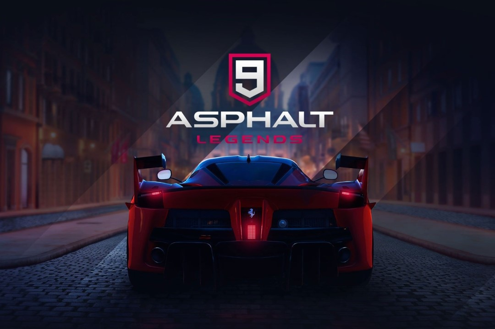

Genre
Racing
Drift, boost, and perform aerial stunts in one of the most cinematic arcade racing experiences on mobile and PC.
Asphalt 9: Legends is a high-speed arcade racing game featuring real-world cars, stunning graphics, and thrilling tracks. Players can race against AI or other players in multiplayer mode, perform stunts, and unlock new vehicles. The game is known for its smooth controls and exciting racing experience, making it a favorite among racing game lovers.
Arcade racing with high-speed stunts
Asphalt 9 features licensed supercars, dramatic tracks, and nitro-based racing where precision drifts and route choices are key to winning.